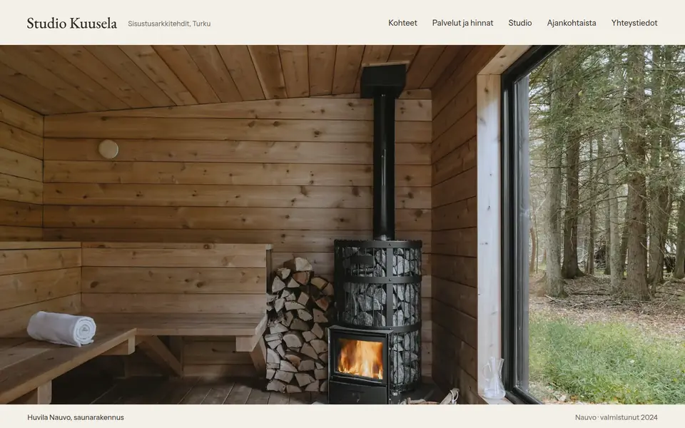
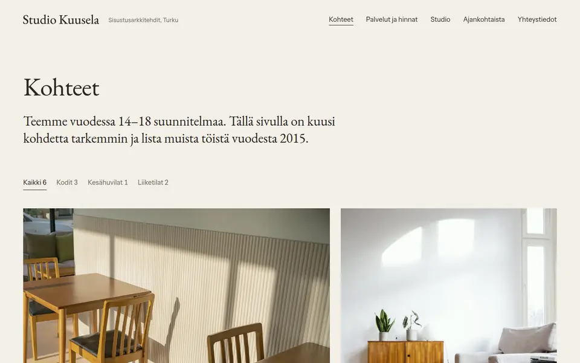
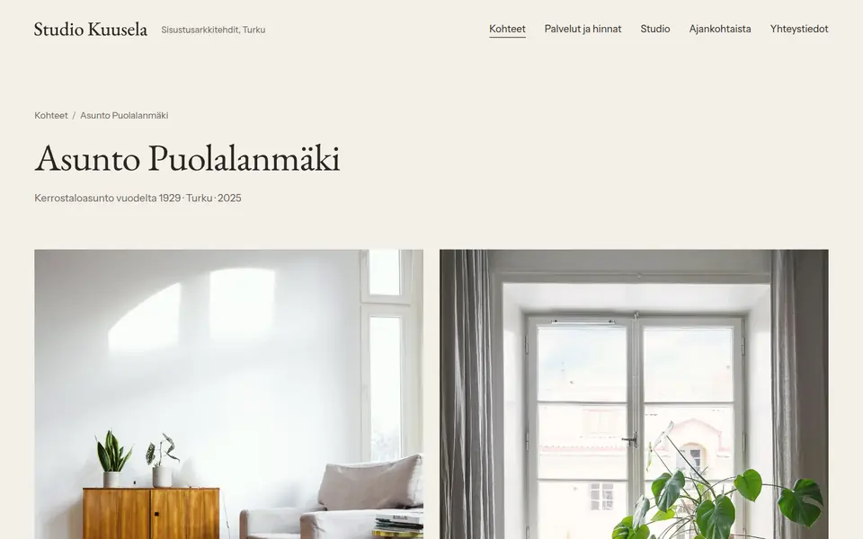
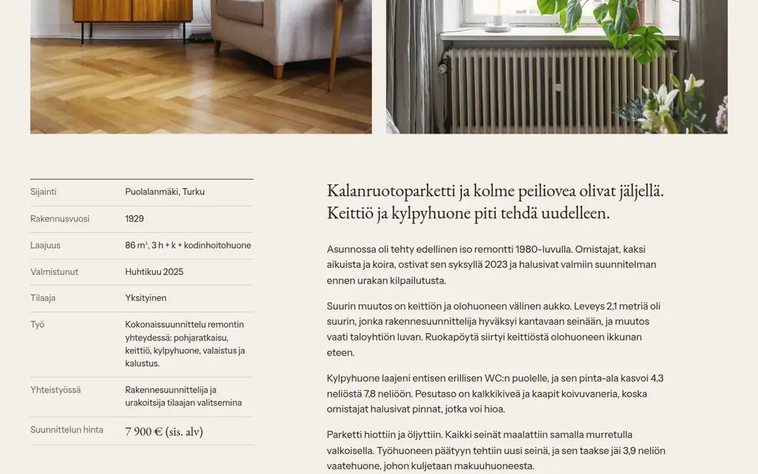
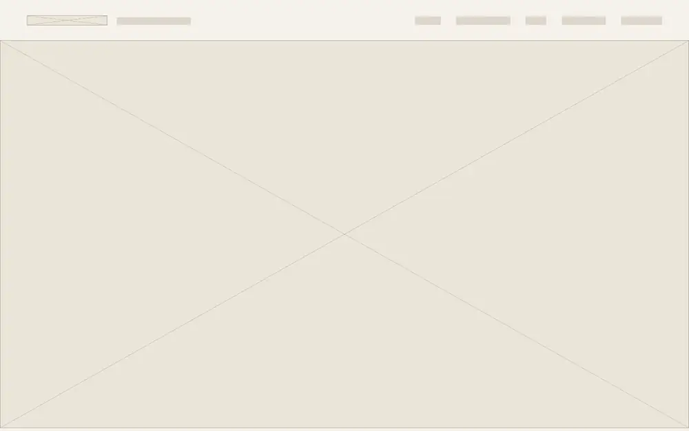
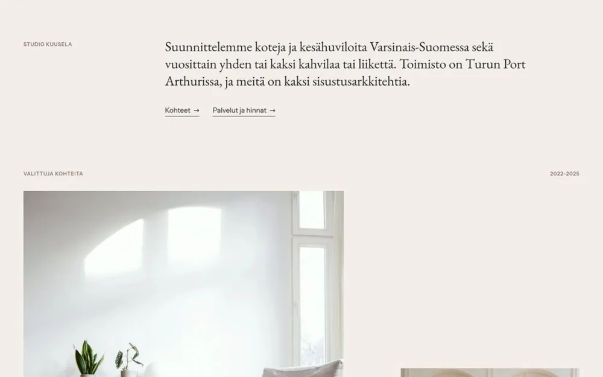
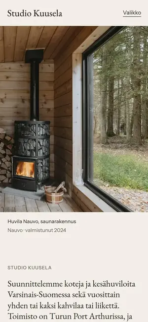
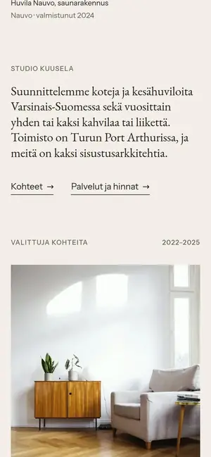
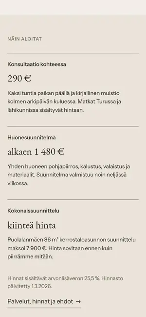
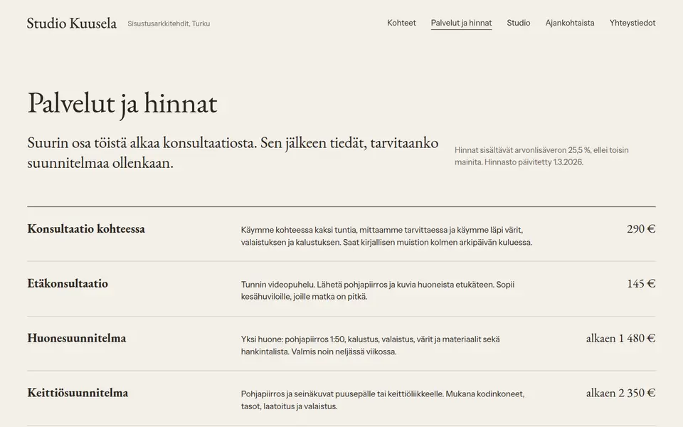

Työt Sisustusarkkitehtitoimisto
Studio Kuusela
Näkyy, mitä suunnittelu muuttaa.
- Ala
- Sisustusarkkitehtitoimisto
- Paikkakunta
- Turku
- Työ
- Nimi, liikemerkki, ilme ja sivusto
- Sivusto
- 16 sivua, etusivu 0,5 Mt
Konsepti Studio Kuusela on kuvitteellinen yritys. Tein sivuston näyttääkseni, mitä sisustusarkkitehdin sivut voivat tehdä.

Lähtökohta
Studio Kuusela on kahden sisustusarkkitehdin toimisto Turun Port Arthurissa. Se suunnittelee koteja ja kesähuviloita Varsinais-Suomessa sekä pari kahvilaa tai liikettä vuodessa.
Alan parhaat sivut näyttävät hienoilta, mutta niistä ei selviä, mitä suunnittelu maksaa. Kotimaisilla kuluttajasivuilla hinnat näkyvät, mutta ulkoasu muistuttaa usein valmispohjaa. Asiakas haluaa tietää molemmat ennen kuin varaa konsultaation.


Ratkaisu
Etusivu alkaa yhdellä isolla kuvalla Nauvon saunarakennuksesta, ja heti sen alla kerrotaan, keitä studiossa on ja missä se on. Kohdesivujen tietolaatikossa on myös suunnittelun hinta, ja jokaisella kohteella on materiaaliluettelo. Puolalanmäen asunnon kohdalla on pohjapiirros, josta näkee puretut ja uudet seinät. Palvelut ja hinnat -sivulla on koko hinnasto, työn vaiheet ja ehdot. Liikemerkki on piirretty EB Garamondin kirjainmuodoista, ja kaikki kuvat on käsitelty samalla lämpimällä säädöllä.

Mitä sivusto tekee
Konsultaatioon tullaan hinta tiedossa
Suunnittelun hinta näkyy jokaisen kohteen tiedoissa ja hinnastossa.
Kohteet näyttävät, mitä suunnittelu muuttaa
Pohjapiirros puretuin ja uusin seinin ja materiaaliluettelot näyttävät työn, eivät vain lopputulosta.
Studion ihmiset näkyvät heti
Etusivulla kerrotaan heti, keitä studiossa on ja missä se on. Kotia suunnittelevalle se on tärkeää.


Toteutus
- Nimi, liikemerkki, värit ja typografia
- Suunnittelun hinta jokaisen kohteen tiedoissa
- Pohjapiirros puretuin ja uusin seinin
- Hinnasto, työn vaiheet ja ehdot
Puhelimella pääkuva rajautuu pystyyn kiukaan ja ikkunan ympärille, ja kohdesivuilla teksti tulee ennen tietolaatikkoa.




Kuvat ovat Unsplash-lisenssin alaisia kuvia, ja kuvaajat mainitaan sivustolla.
Avaa sivusto